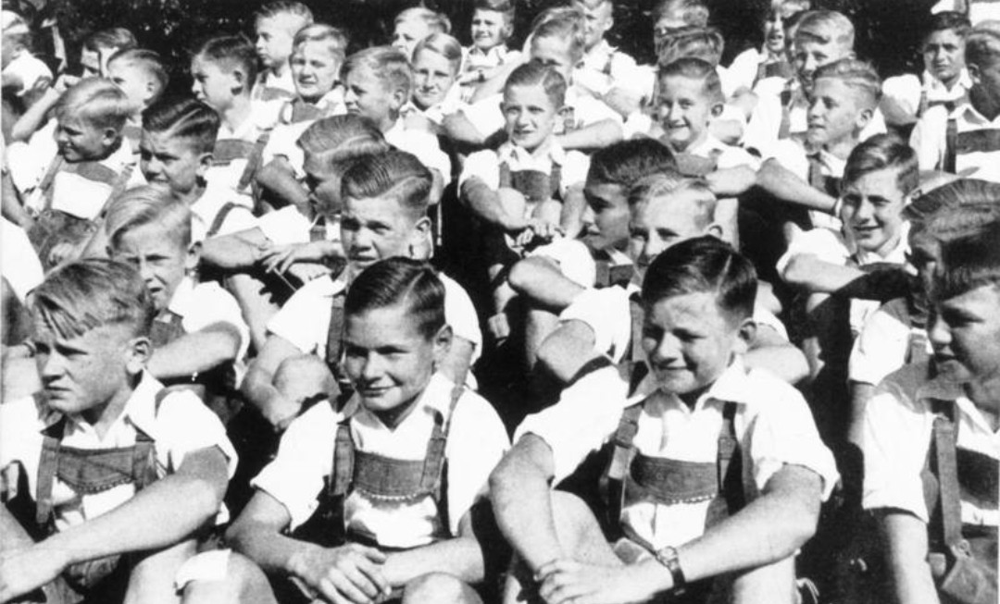

JEUNESSES HITLÉRIENNES (Hitlerjugend)
Organisation de jeunesse du Parti nazi — 1926 à 1945

1. Origines (1922–1933)
Les Jeunesses hitlériennes trouvent leur origine dans un premier groupe fondé en 1922, dissous après le putsch raté d’Hitler en 1923. Elles renaissent officiellement le 4 juillet 1926 sous le nom de Hitlerjugend.
Entre 1926 et 1933, l’organisation reste minoritaire, concurrencée par les scouts, les mouvements religieux et les clubs sportifs. L’arrivée d’Hitler au pouvoir en janvier 1933 provoque une explosion des effectifs : de 100 000 à plus de 2 millions de membres en quelques mois.
2. Objectifs idéologiques et militaires
La Hitlerjugend est conçue comme un instrument d’endoctrinement. Elle vise à imposer l’idéologie du régime, à créer une loyauté absolue envers Hitler, à préparer les garçons à devenir soldats et les filles au rôle familial imposé par le régime.
Les activités reprennent les codes des scouts, mais sont détournées pour servir l’idéologie nazie et intégrer la jeunesse dans le projet politique du Troisième Reich.
3. Organisation interne (6–18 ans)
Garçons
- Pimpfen : 6–10 ans
- Deutsches Jungvolk (DJ) : 10–14 ans
- Hitlerjugend (HJ) : 14–18 ans
Filles
- Jungmädelbund (JM) : 10–14 ans
- Bund Deutscher Mädel (BDM) : 14–18 ans
Les plus âgés rejoignent ensuite le Service du travail du Reich (RAD), puis souvent la Wehrmacht ou la SS, prolongeant ainsi l’encadrement idéologique et disciplinaire commencé dans la jeunesse.
4. Recrutement (en civil)
Au moment du recrutement, les jeunes sont en civil. Les uniformes n’apparaissent qu’après l’intégration dans l’organisation. Le recrutement se fait dans les écoles, les mairies, les groupes de quartier et lors de réunions locales.
L’image jeunesses-hitleriennes-document.jpg illustre cette phase : des jeunes avant l’uniforme, avant l’endoctrinement complet, dans un contexte administratif ou documentaire.
5. Obligation et monopole (1936–1939)
En 1936, la Hitlerjugend devient la seule organisation de jeunesse autorisée en Allemagne. En 1939, l’adhésion devient obligatoire pour tous les jeunes de 10 à 18 ans.
Les autres mouvements (scouts, églises, associations sportives) sont dissous. En 1940, plus de 80 % des jeunes Allemands appartiennent à la HJ ou au BDM, ce qui fait de la jeunesse un pilier central du régime.
6. Rôle pendant la guerre (1939–1945)
Pendant la Seconde Guerre mondiale, les jeunes sont mobilisés pour la défense antiaérienne, les transmissions, la logistique, les services auxiliaires et les opérations de secours.
À partir de 1944, certains adolescents de 14–16 ans sont envoyés au combat dans le Volkssturm, notamment lors de la défense de Berlin, illustrant l’extrême instrumentalisation de la jeunesse par le régime.
7. Endoctrinement et discipline
La Hitlerjugend impose l’obéissance absolue, le culte du Führer, la compétition permanente, la délation et la haine raciale. Les activités physiques servent à renforcer la discipline, créer un esprit de corps et préparer au combat.
L’endoctrinement passe par les chants, les cérémonies, les camps et les formations idéologiques, visant à couper les jeunes de toute influence extérieure et à les fondre dans la communauté nationale-socialiste.
8. Dissolution (1945)
Après la capitulation de l’Allemagne en mai 1945, la Hitlerjugend est interdite et dissoute. L’organisation est classée comme instrument criminel du régime nazi et ses dirigeants sont jugés pour leur rôle dans l’endoctrinement massif de la jeunesse.